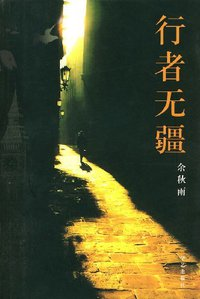

1968年8月毕业于上海戏剧学院戏剧文学系。当时正逢浩劫，受尽屈辱，家破人亡，被迫赴农场劳动。学校复课后又参加过教材编写，直到文化大革命结束。 1983年之后，由于出版了一系列学术著作如《戏剧思想史》、《中国戏剧史》、《观众心理学》、《艺术创造论》以及Some Observations on the Aesthetics of Primitive Theatre等，先后获全国戏剧理论著作奖、上海市哲学社会科学著作奖、全国优秀教材一等奖。 1985年成为当时中国大陆最年轻的文科正教授。 1986年获“国家级突出贡献专家”称号，当时获此称号的全国仅十五名。 1986年开始被任命为上海戏剧学院副院长、院长，上海市写作学会会长，上海市委咨询策划顾问，并被选为“上海十大高教精英。” 八十年代后期开始写作《文化苦旅》等文化散文，辞职后更以亲身历险考察国内外各大文明为人生主业。所写的《山居笔记》、《霜冷长河》、《千年一叹》、《行者无疆》等，开启一代文风，长期位踞全球华文书畅销排行榜前列，已被公认目前全世界各华人社区中影响力最大的作家之一。